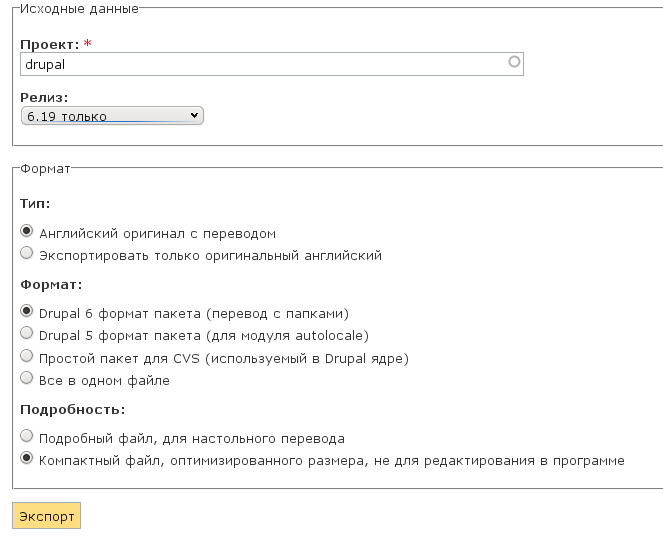
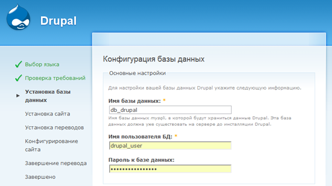
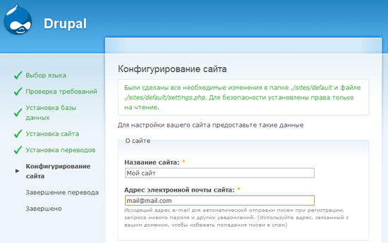
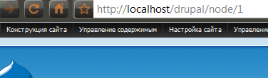
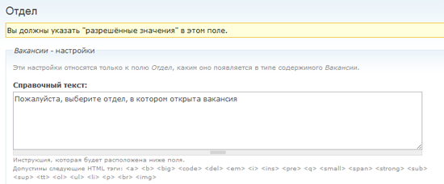

igrishaev6 сентября 2010 в 10:34
Начинаем работать с Drupal: полное практическое руководство (часть 1)
Автор оригинала: Саад Басси
Здравствуйте!
Выношу на суд хабраобщества перевод замечательной статьи Getting Started with Drupal: A Comprehensive Hands-On Guide. Данный материал является незаменимым руководством для начинающих друпальщиков, поскольку в нем рассматриваются не только установка и базовые принципы, но и два из «трех китов» Друпал-сайтостроения — Views и CCK. Самое приятное, что вся статья посвящена практическому созданию полезного сайта (доски объявлений). Право, во времена Друпала 4.7, когда я только начинал с ним знакомиться, о таких подробных и внятных руководствах можно было только мечтать.
Позвольте кратко огласить друпальщиков, трудившихся над переводом и локализацией: Ch, graker (инициатор перевода), iHappy (локализация скриншотов), kyky (ваш покорный слуга), mak-vardugin, P.Selfin, trubinovskaya, vgoodvin.
Начинаем работать с Drupal: полное практическое руководство
Drupal (Друпал) — это популярная система управления контентом с открытым исходным кодом. Из-за ее мощного функционала разрабатывать сложные сайты на Друпале значительно проще, чем писать их с нуля. Неудивительно, что благодаря многочисленному сообществу пользователей и огромному количеству модулей, мы слышим о Друпале все чаще и чаще.
В этом руководстве мы на практике откроем для себя Друпал и создадим сайт с новым типом содержимого и страницами для его вывода.
Готовы? Погружаемся в исключительно мощную систему управления контентом!
Задачи
По прочтении данного руководства вы:
- узнаете о достоинствах и недостатках Друпала;
- установите Друпал;
- поймете принцип его работы;
- узнаете о модулях Друпала;
- научитесь работать со страницами администрирования;
- создадите и опубликуете содержимое сайта;
- настроите свой тип содержимого с помощью CCK;
- научитесь создавать представления для вывода содержимого с помощью модуля Views;
- создадите представления со страничным отображением;
- создадите представления с блочным отображением;
- узнаете о темах оформления.
Что мы сделаем
Мы разработаем сайт на Друпале с доской объявлений о вакансиях, куда посетители смогут добавить вакансии и проекты. Наша цель состоит именно в том, чтобы вы сразу начали создавать сайты, а не просто читали, как это делается.
Почему именно Drupal?
Сперва коротко рассмотрим, какие достоинства (и недостатки) имеет Друпал, чтобы вы могли определиться, подходит ли вам данная CMS.
Достоинства
Открытый код. Да, Друпал распространяется с открытым исходным кодом, а это значит — вам доступны все плюсы открытого ПО.
Гибкость конфигурирования. Главное достоинство Друпала кроется в его гибкой архитектуре. Вы можете применять его для построения сайтов любых типов: от социальных медиа-сайтов, позволяющих пользователям размещать собственное содержимое и голосовать за него, форумов и сайтов с вакансиями до галерей или публикаций портфолио дизайнеров. Друпал отлично справится с поставленной задачей (конечно, для этого вам придется немножко потрудиться).
Многочисленное и грамотное сообщество разработчиков. Вокруг Друпала сложилось многочисленное, яркое и открытое сообщество пользователей и разработчиков. Это значит, вам доступны отличные модули, своевременное исправление багов и обновление ядра, а также неиссякаемый поток документации и руководств в сети.
Модули. Для Друпала разработано огромное число модулей, расширяющих его исходный функционал (о том, что такое модуль, мы поговорим немного позже).
Легкость для разработчиков. Как веб-разработчик, вы не почувствуете ограничений при работе с Друпалом. Ведь Друпал разрабатывался с учетом потребностей именно разработчиков. Ошибкой некоторых основных CMS является чрезмерное акцентирование на пользовательском интерфейсе, что часто влечет недостаток внимания к нуждам тех, кто, собственно, будет разрабатывать и продвигать систему в дальнейшем. Но с Друпалом это не так.
Встроенная система кеширования. Друпал располагает встроенной системой кеширования, способной снизить нагрузку на сервер и сократить время генерации страницы. Кеширование позволяет избежать сложных запросов к базе данных, что повышает производительность сервера.
Достойная встроенная поисковая система. В отличие от других CMS, в Друпале есть очень неплохая система поиска, реализованная на уровне ядра. Конечно, она не может конкурировать с такими поисковыми сервисами как Google Search, или Yahoo! Search BOSS, но тем не менее вполне пригодна для работы.
Недостатки
Длительный процесс обучения. Да, это факт, что изучение Друпала дается несколько труднее, чем изучение других CMS. Я бы не рекомендовал Друпал, если вы хотите сделать первый сайт уже через неделю знакомства. У вас уйдет не один месяц, чтобы по-настоящему понять Друпал, и еще столько же на создание первого полноценного сайта. Однако следует заметить, что небольшой сайт вы сможете создать меньше, чем за день (именно этим мы с вами и займемся в данном руководстве).
Сложность для не-разработчиков. Поскольку потребности разработчиков здесь стоят во главе угла, тем, кто не очень знаком с информационными технологиями, потребуется некоторое время, чтобы привыкнуть к Друпалу. Это значит, что специалистам, разбирающимся в веб-разработке лишь поверхностно, будет сложно создавать (или даже администрировать) сайты на Друпале.
Сложный интерфейс. Интерфейс администрирования сайта в Друпале несколько сложен для понимания; в целом он не такой дружелюбный к пользователю, каким мог бы быть. (Впрочем, это скоро изменится).
Drupal против WordPress
Где бы ни обсуждали Друпал, всегда возникает непреодолимое желание сравнить его с другой ведущей открытой веб-платформой; как правило, это WordPress.
И где бы вы ни предположили, что WordPress — не полнофункциональная CMS, а всего лишь платформа для блогов — вас всегда будет ждать жаркая дискуссия. Сам я использую обе CMS, но иногда возможностей WordPress просто не хватает.
Иными словами, если вы делаете серьезный ресурс с регистрацией, аутентификацией, набором разрешений и ролей, нaпример, Интернет- мaгaзин, форум или сaйт с видео и аудио-материалами, которые добавляют сами пользователи, имеет смысл использовать более серьезную CMS, чем WordPress.
Я бы не рекомендовал вам использовать Друпал, если клиенту нужен только блог или простой сайт с портфолио, состоящий из нескольких страниц и базового содержимого: такие сайты быстрее и проще сделать на WordPress. Друпал для этого явно излишен.
Другой важный аргумент против использования Друпала — интерфейс, в котором непросто разобраться неопытным пользователям. Это веский аргумент в пользу WordPress.
Сайты, работающие на Drupal
Чтобы вас воодушевить, перечислю несколько сайтов на Друпале.
Mozilla
Мозилла, компания, ответственная за Firefox, использует Друпал практически во всех своих веб-проектах. Официальные сайты Мозиллы и Spread Firefox сделаны на Друпале.
Spread Firefox
Ubuntu
Официальный сайт Ubuntu, популярного дистрибутива Linux, операционной системы, которая стоит на многих серверах, тоже сделан на Друпале. Обратите внимание на размер этого сайта и количество типов содержимого и функций; вскоре вы поймете, почему для Ubuntu выбрали именно Друпал.
Нужны еще примеры? Тогда посмотрите на эти замечательные Друпал-сайты.
Скачиваем и устанавливаем Drupal
В рамках данного руководства будем пользоваться последним стабильным релизом Друпала 6; скачайте его отсюда.
Устанавливаем Drupal на XAMPP
Здесь мы будем устанавливать Друпал себе на компьютер, но если хотите поставить его на настоящий сервер, процесс будет аналогичен.
Чтобы установить Друпал на локальную машину, вам потребуется серверная платформа, такая как XAMPP или WAMP. Не пугайтесь, если никогда о них не слышали — использовать их очень легко.
Если у вас еще нет локального веб-сервера, установите XAMPP прямо сейчас.
Ниже приведена ссылка на простое руководство за авторством Якоба Гьюба (основателя и главного редактора Six Revisions), по которому вы очень быстро установите и настроите XAMPP (руководство написано для WordPress, так что следуйте только первой его части, шагам 1–26, держа в уме, что вы уставливаете не WordPress, а Друпал):
Далее в данном руководстве мы предполагаем, что вы используете XAMPP, так что, если вы выбрали другой серверный пакет, вам возможно придется немного изменить процесс инсталляции.
Скопируйте файлы Drupal в директорию XAMPP
Скопируйте пакет с Друпалом, который вы скачали ранее, в директорию xampp\htdocs. Распакуйте файлы и переименуйте папку в «drupal» для простоты навигации.
Теперь перейдите в папку xampp\htdocs\drupal\sites\default.
Создайте settings.php
Сделайте копию файла default.settings.php и переименуйте ее в settings.php.
Убедитесь, что вы не удалили default.settings.php, в противном случае установка Друпала прервется с ошибкой; это одна из самых частых ошибок, совершаемых начинающими разработчиками на Друпал.
Создаем базу данных MySQL
Друпал для хранения данных использует MySQL. Так что нам необходимо заранее настроить базу данных MySQL. Для этого воспользуемся phpMyAdmin — веб-интерфейсом для удобного администрирования баз данных MySQL (он уже входит в дистрибутив XAMPP).
Зайдите в браузере на страницу phpMyAdmin по адресу:
localhost/phpmyadmin
В данном примере, я назвал базу db_drupal. Вы можете предоставить суперпользователю (root) все привилегии на работу с базой db_drupal, так что он сможет читать, записывать и изменять данные в базе. Однако использовать root-аккаунт на рабочем сайте — не лучшая практика. Лучше всего создать отдельного пользователя для данной базы данных и выдать ему только необходимые привилегии. Сейчас мы так и сделаем.
Создание отдельного MySQL-пользователя для базы данных Drupal
В нашем примере я создам новый MySQL-аккаунт и назову его drupal_user. Для рабочих сайтов, однако, неплохо использовать неочевидное, случайное имя пользователя, чтобы снизить вероятность взлома при атаке перебором.
И уж точно не используйте root-аккаунт, так как большинство хакеров именно его будет «пробовать» в первую очередь. Пользователь root в MySQL обладает суперпривилегиями и имеет доступ не только к вашей базе drupal_db, но и к другим базам данных. (Кстати, неплохой вариант — вообще удалить пользователя root и не использовать его нигде. Можно создать пользователя псевдо-root, но об этом как-нибудь в другой раз).
Для создания нового пользователя MySQL перейдите на главную страницу phpMyAdmin, а затем щелкните на вкладку «Привилегии».
Теперь нажмите «Добавить нового пользователя» и заполните поля ввода необходимыми данными.

Пока вы работаете на локальной машине (то есть, Друпал установлен на вашем компьютере и работает на XAMPP), можете выбрать все доступные привилегии, но на рабочем сервере очень рекомендуется установить только те, которые действительно необходимы пользователю drupal_user.
Для нашего примера я выбрал только те привилегии, которые хочу предоставить пользователю drupal_user.
- Select
- Insert
- Update
- Delete
- File
- Create
- Alter
- Index
- Drop
- Create Temporary Tables
- Lock Tables
На этом мы заканчиваем работу с MySQL и phpMyAdmin.
Локализация Drupal (от переводчиков)
Чтобы процесс установки совпадал с иллюстрациями в этом руководстве, необходимо устанавливать русифицированную версию Друпала. Для этого нужно скачать его перевод. Переводы Друпала и его модулей на русский язык находятся на сайте Drupaler.ru. Чтобы скачать перевод самого Друпала, зайдите на эту страницу, заполните форму как показано на рисунке и нажмите «Экспорт».

Затем распакуйте скачанный архив в ту же директорию, куда чуть раньше распаковывали Друпал.
Переводы дополнительных модулей Друпала также находятся на Drupaler.ru. Поскольку далее по ходу руководства нам потребуются модули CCK и Views, скачайте их переводы прямо сейчас со страниц «Перевод CCK» и «Перевод Views».
Инсталлируем Drupal с помощью мастера установки
Итак, введем в адресной строке нашего браузера следующий URL:
localhost/drupal
Если вы не забыли переименовать распакованную директорию с Друпалом в «drupal», все должно сработать. Если забыли — замените «drupal» в URL-е тем названием папки, которое вы задали при распаковке файлов Друпала в htdocs.
Как только вы перейдете по URL выше, сразу увидите меню установки Друпала. Вы можете выбрать нужный язык интерфейса Друпала на первой странице. Обратите внимание, что эту опцию можно будет изменить позже из админки. Мы продолжим установку на русском, поэтому давайте выберем «Установить Друпал на русском».
На следующем экране Друпал проверит, способен ли ваш сервер (в нашем случае, локальная машина) работать с Друпалом. Если у вас на сервере не хватает нужных для Друпала приложений, будет выведено сообщение об ошибке.
Далее вы увидите экран конфигурации базы данных. Здесь вам нужно предоставить ту информацию, которую вы использовали при создании таблицы drupal_db и пользователя drupal_user.

Там же, на экране настройки базы данных, щелкните на «Дополнительные настройки» и увидите опцию под названием «Префикс таблиц», которая позволяет приписать к названию всех MySQL-таблиц Друпала заданную строку (напр. blackjack_drupal_table). Я рекомендую вам задать случайный префикс, понятный только вам; эта осторожность поможет снизить угрозу атаки на базу данных с помощью SQL-инъекций.
Если все предыдущие действия были выполнены правильно, Друпал начнет установку необходимых модулей, после чего вы будете перенаправлены на страницу конфигурирования сайта.

Параметры конфигурирования интуитивно понятны, так что я позволю вам ввести всю необходимую информацию самостоятельно.
Настройка чистых ссылок
Одна из опций, которая может оказаться для вас незнакомой, называется «Чистые ссылки» и располагается в разделе «Настройки сервера». Ссылки, генерируемые Друпалом по умолчанию, неинтуитивны и выглядят примерно как localhost/index.php?q=21.
Когда чистые ссылки включены, URL-адреса выглядят приятнее, легче запоминаются и способствуют улучшению SEO. Например, localhost/events.
Для работы чистых ссылок требуется, чтобы на сервере был установлен mod_rewrite (модуль Apache). Скорее всего, он уже у вас установлен.
Если mod_rewrite не установлен или не запущен (что маловероятно, если у вас сервер Apache), Друпал выдаст ошибку и использование чистых ссылок будет недоступно. Это не помешает нам в создании сайта, но по описанным выше причинам следует включить чистые ссылки как можно быстрее.
Установка завершена
Если вы безошибочно следовали руководству, то увидите вот такой экран:
Не переживайте, если появится ошибка функции mail(): она возникает из-за того, что мы используем XAMPP на локальной машине и попросту не настроили почтовый сервер, следовательно Друпал не сможет отправлять письма администраторам.
Когда вы будете работать с настоящим сервером, эти вещи уже будут заранее настроены (если только вы не делаете собственный веб-сервер, который еще не сконфигурирован).
Заходим в админку Drupal
Давайте перейдем в админку Друпала. Как только вы зайдете на новый сайт по адресу localhost/drupal, появится следующая страница:
Заходите в админку, щелкнув по ссылке «Управление».
Теперь, когда вы установили Друпал, пора обсудить концепцию модулей.
Что такое модули Drupal?
Модули — это расширения Друпала, добавляющие в него дополнительный функционал.
К примеру, Друпал идет с предустановленным модулем под названием «System». Фактически, Друпал и представляет собой набор модулей ядра, которые разрабатываются и поддерживаются командой проекта. Модуль «System» — один из них, Друпал без него не может работать.
Как добавить модули Drupal
Помимо модулей ядра, входящих в состав Друпала, вы можете скачать дополнительные модули из официального хранилища-репозитория. Кроме того, после получения навыков разработки на API модулей Друпала, вы можете создавать собственные модули.
После того, как вы найдете нужный модуль, скачайте его на свой компьютер.
Затем нужно перенести распакованный модуль в директорию drupal\sites\all\modules.
По умолчанию папки для модулей нет, поэтому ее необходимо создать вручную. Создайте папку modules в drupal\sites\all.
Хорошая практика — держать скачанные модули отдельно от идущих в дистрибутиве Друпала по умолчанию, так что не кладите дополнительные модули в drupal\modules.
Установка дополнительного модуля: модуль CCK
CCK (Content Construction Kit — Конструктор для содержимого) — очень популярный модуль Друпала, позволяющий вам создавать разные новые типы содержимого. Давайте потренируемся устанавливать модули на примере CCK, тем более что в дальнейшем он нам понадобится.
Во-первых, скачайте подходящую версию CCK. Затем распакуйте архив в drupal\sites\all\modules; в ту же папку распакуйте скачанный ранее с Drupaler.ru архив с переводом модуля CCK.
После скачивания и размещения модуля CCK в drupal\sites\all\modules, необходимо включить его в интерфейсе администрирования Друпала. Перейдите в меню Конструкция сайта > Модули (localhost/drupal/admin/build/modules). Здесь вы увидите модуль CCK*. Включите его. Также можете включить и подмодули CCK, если они вам нужны (позже, когда начнем работать с CCK, мы так и сделаем).
* — по сложившейся в незапамятные времена традиции модуль, везде и всюду называемый CCK, в списке модулей называется Content (прим. пер.).
Поздравляю! Вы только что установили модуль Друпала.
Страницы администрирования Drupal: ускоренный курс
Есть два варианта просмотра административных разделов Друпала:
- По задачам.
- По модулям.
Если вы выберете отображение «По задачам», то страница будет организована по различным задачам администрирования.
Например, при организации страницы «По задачам» под заголовком «Содержание» вы увидите все задачи, связанные с работой с содержимым. «Содержимое», нaпример, позволяет просматривать, редактировать и удалять материалы, a «Настройки публикации» контролируют их поведение и отображение на сайте.
У каждой задачи под названием имеется краткое описание, которое поможет вам понять ее назначение.
Если же вы выберете отображение «По модулям», то ссылки будут организованы по модулям.
Например, в отображении «По модулям» под заголовком модуля «System» вы найдете пункты «Настройка прав доступа», «Чистые ссылки», «Модули» и так далее.
Кривая изучения интерфейса админки
Привыкать к административному интерфейсу Друпала можно очень долго; впрочем, существует немало дополнительных модулей, существенно облегчающих работу с админкой.
Я советую вам установить модуль Administration menu, добавляющий в верхнюю часть всех страниц сайта выпадающее меню навигации, видимое только администратору.
Настраиваем главную страницу
Время действовать. Давайте создадим главную страницу. Для этого мы добавим на сайт первый материал типа «Страница». Перейдем в меню Содержание > Создать материал > Страница (localhost/drupal/node/add/page).
Параметры меню
Тема, которую Друпал использует по умолчанию, отображает меню навигации в верхнем правом углу. Настройки в секции «Параметры меню» определяют, включать ли ссылку на нашу страницу в навигацию, или нет.
Если вы хотите добавить ссылку на главную страницу в основное навигационное меню, выберите «Основные ссылки» в выпадающем меню «Родительский пункт».
Опция «Вес» позволяет организовать порядок вывода ссылок. Ссылки с меньшим весом будут выведены первыми, поскольку они «легче».
Так, например, если ссылка «Главная страница» имеет вес 0, а ссылка «О сайте» — 5, то пункт «Главная страница» будет показан первым, потому что он легче.
Если же ссылка «Главная страница» имеет вес 0, а ссылка «О сайте» — тоже 0, тогда Друпал организует ссылки в алфавитном порядке. Так как вес одинаковый, первой будет показан пункт «Главная страница».
В нашем случае, оставляем вес «Главной страницы» неизменным (по умолчанию вес равен нулю).
Формат ввода
Селектор в секции «Формат ввода» позволяет выбрать способ ввода содержимого.
Формат Filtered HTML ограничивает набор HTML-тегов, которые можно использовать в тексте, через фильтрацию опасных HTML-элементов вроде <script>, которые могут использовать для атаки на браузер посетителя сайта.
Используйте формат Filtered HTML, если админитраторы сайта не знакомы с HTML.
А для разработчиков следует использовать формат Full HTML. Использование этого формата предполагает, что вы хорошо знакомы с языком HTML.
Информация о редакции
Если созданием содержимого у вас на сайте занимается только один человек, эта опция вам, наверное, не пригодится (разве что, вы очень забывчивы).
Если же вы работаете с командой добавляющих материалы пользователей и хотите сохранять разные версии, вести журнал изменений содержимого и делать пометки о характере этих изменений — секция «Информация о редакции» вам очень пригодится.
Кроме того, при отмеченном флажке «Создавать новую редакцию» старая версия материала будет сохранена на случай, если вы захотите к ней вернуться.
Параметры комментариев
Эти параметры позволяют включить или отключить комментарии посетителей для данного материала. Нам, пожалуй, не нужны комментарии на главной странице, так что я выбрал пункт «Отключено».
Информация об авторе
В этой секции вы можете изменить имя автора и дату публикации.
Вам не потребуется каждый раз заполнять данные параметры — Друпал это сделает сам при условии, что вы их не изменяли.
Настройки публикации
Эта секция задает настройки публикации материала.
- Опубликовано — отображает статус публикации. Уберите галочку, если хотите снять материал с публикации.
- Помещать на главную — материал будет выводиться на главной странице сайта. Снимите отметку, если не хотите выводить материал на главную страницу.
- Закреплять вверху списков — материал будет отображаться в верхней части главной страницы и других списков.
Посмотрим на главную страницу
А вот и наша главная страница; пока она очень простая, но не волнуйтесь, вскоре мы ее усложним.
Чем займемся дальше
Дальше мы сделаем доску объявлений о вакансиях, наполняемую пользователями.
В процессе ее создания мы поработаем с пользовательскими типами материалов, представлениями Views и другими средствами разработки сайтов на Друпале.
Что такое нода в Drupal?
Прежде чем продолжить, необходимо обсудить одну из самых непонятных для новичков тем — концепцию нод.
Нода — это базовый элемент в структуре содержимого Друпала. Проще говоря, если представить Друпал зданием, то ноды будут кирпичиками. Каждая часть содержимого сайта является нодой — будь то страница, публикация в форуме, статья и т.д.
Помните, что страницы администрирования и пользовательского профиля не считаются нодами, поскольку они генерируются системой, а не пользователями.
Нода — важнейшая концепция, которую обязательно нужно понять, если вы планируете разрабатывать на Друпале сложные сайты. Несмотря на то, что смысл нод зачастую непонятен начинающим, именно они дают разработчику на Друпале невероятную гибкость в создании и настройке сайтов.
Чтобы рассмотреть это на примере, давайте перейдем на главную страницу, созданную ранее. Обратите внимание на адресную строку браузера, в ней будет указано нечто вроде этого (если чистые ссылки отключены, адрес будет выглядеть иначе):

В адресе вы увидите слово «node»; это значит, что данная страница является нодой.
Создание нового типа материала в Drupal
Создание нового типа материала — отличный способ настроить сайт для своих нужд. Для каждого типа вы можете определить способ отображения, назначить права доступа, присоединить дополнительные свойства — возможности просто бесконечны.
Создадим тип материала «Вакансия»
Cделаем для нашего сайта доску объявлений о вакансиях. Пользователи будут размещать вакансии и проекты, эдакий маленький Craigslist (прим. переводчика: www.craigslist.org — сервис размещения вакансий и резюме).
Для каждой вакансии нам потребуются следующие поля:
- наименование вакансии;
- подробное описание;
- отдел — в виде выпадающего списка;
- опыт работы — текстовое поле;
- зарплата — текстовое поле.
Работать с пользовательскими типами материала в Друпале легко. Сначала перейдите в Администрирование > Типы материала > Добавить тип содержимого.
Почти все элементы страницы добавления нового типа материала снабжены пояснениями. Я считаю необходимым поговорить отдельно об элементе «Тип». Тип — это машинное имя нового типа материала, используемое в более сложных разработках.
В нашем случае, для вакансий мы зададим машинное имя типа материала «job». Это очень важный момент: в будущем, когда вы станете мастерами-ниндзя Друпала и захотите внести комплексные изменения в свой сайт, например, изменить способ отображения объявлений, вам потребуется создать файл с именем node-job.tpl.php (это уже выходит за рамки данного руководства).
Теперь заполните поля «Название», «Тип» и «Описание», и мы двинемся дальше.
Свойства формы
В данной секции у вас есть возможность создать и настроите форму для ввода объявлений о вакансиях; именно ее увидят пользователи, когда будут публиковать вакансии.
Настройка процесса публикации
В настройках процесса публикации содержатся основные параметры публикации материала. Если вы хотите, чтобы вакансия была опубликована без предварительного просмотра администратором, отметьте пункт «Опубликовано».
Продолжайте настраивать процесс публикации. В разделе «Установки комментариев» можете установить разные варианты комментирования вакансий. Если вы хотите, чтобы посетители могли комментировать вакансии, включите комментарии. Не хотите — выключите.
Создаем тип материала «Вакансия»
Самое время нажать «Сохранить» и тем самым завершить создание нашего первого типа материала. Если вы следовали инструкции, в списке типов содержимого появится «Вакансия» (рядом со страницей, статьей и так далее).

Настройка типов содержимого с помощью CCK
Итак, у нас есть свой собственный тип материала. Теперь нам нужно настроить форму добавления вакансий с помощью крайне полезного модуля — CCK.
CKK — это, как правило, первый модуль, который ставят на новоиспеченный сайт искушенные разработчики. Он настолько важен, что будет внедрен в ядро Друпала 7, после чего вам не придется больше скачивать его вручную.
К этому моменту вы уже должны были установить CCK согласно описанию работы с модулями в начале руководства.
Включим несколько подмодулей CCK
Для начала, пройдите в меню Администрирование> Конструкция > Модули.
В секции CCK вы увидите список подмодулей. Какие-то из них уже включены по умолчанию, а какие-то — нет. Почему? Архитектура Друпала — исключительно модульная, и это позволяет нам использовать в разработке только те средства, которые действительно нужны. Разработчикам модулей рекомендуется группировать их по функционалу, вследствие чего модули получаются менее громоздкими и более экономичными.
Как администратор сайта, включайте только те модули и подмодули, которые вам действительно нужны.
Теперь давайте включим несколько подмодулей CCK, нужных нам для формы вакансий.
Вот какие подмодули нужно включить:
Поскольку от пользователей может потребоваться ввод дробных чисел (например, необходимый опыт работы в годах), нам потребуется включить подмодуль Number.
Также нам понадобится модуль Option Widgets, позволяющий добавлять разные элементы ввода данных, например, флажки, группы переключателей и так далее.
Каждый из этих подмодулей зависит от модуля Content: вы не сможете их включить, пока Content выключен.
Добавляем поля в форму
Вы включили подмодули CCK? Прекрасно, настало время настроить форму публикации вакансий.
Перейдите в меню Администрирование > Содержание > Типы содержимого, затем щелкните на ссылку «Управлять полями» в столбце «Действия» напротив типа материала «Вакансия». Здесь-то мы и будем добавлять новые поля к форме.
Сперва я добавлю поле «Отдел», дающее пользователю возможность выбрать из выпадающего списка отдел, в котором возникла вакансия (отдел разработки, финансовый, отдел интерфейсов, ИТ и маркетинга).
После нажатия кнопки «Сохранить», вас перенаправит на страницу, где можно окончательно подстроить поле «Отдел» и перечислить его допустимые значения.


Следущее поле — «Опыт», в него пользователь сможет вводить дробные числа (например, 3.5 года).
В поле «Справочный текст» добавьте подсказку о том, как правильно заполнять поле, чтобы посетители вводили верные значения.

В разделе «Общие настройки» вы можете ограничить значение поля. Например, если в поле «Минимум» задать 2.3, то при попытке разместить вакансию с опытом 1.4 пользователю будет показано сообщение об ошибке.
Последнее поле в типе материала «Вакансия» — «Заработная плата». Это целое число, например, 50 000 рублей.
В общих настройках поля укажите 0 в качестве минимума, чтобы не допустить отрицательных значений, (например, -1200). Почему не указать значение больше нуля? Потому что нулевая зарплата означает, что данная работа не оплачивается.
После создания всех полей, их список для типа материала «Вакансия» будет выглядеть так:
Перетаскивая значок крестика слева от названия полей, вы можете изменить порядок их отображения в форме добавления вакансий.
Создайте несколько вакансий
Прежде чем мы двинемся дальше, создайте несколько вакансий, перейдя на страницу Создать материал > Вакансия. Их данные нам понадобятся в следующей части руководства.
CCK — очень мощный инструмент
Здесь мы работали с самыми простыми полями CCK, но этот модуль предоставляет и гораздо более серьезные средства организации содержимого. Например, вы можете установить модуль ImageField, чтобы пользователи могли размещать изображения (к примеру, пусть работодатели выкладывают фотографии рабочего места).
Если вам нужны дополнительные поля CCK, ознакомьтесь с этим списком.
Продолжение.
�